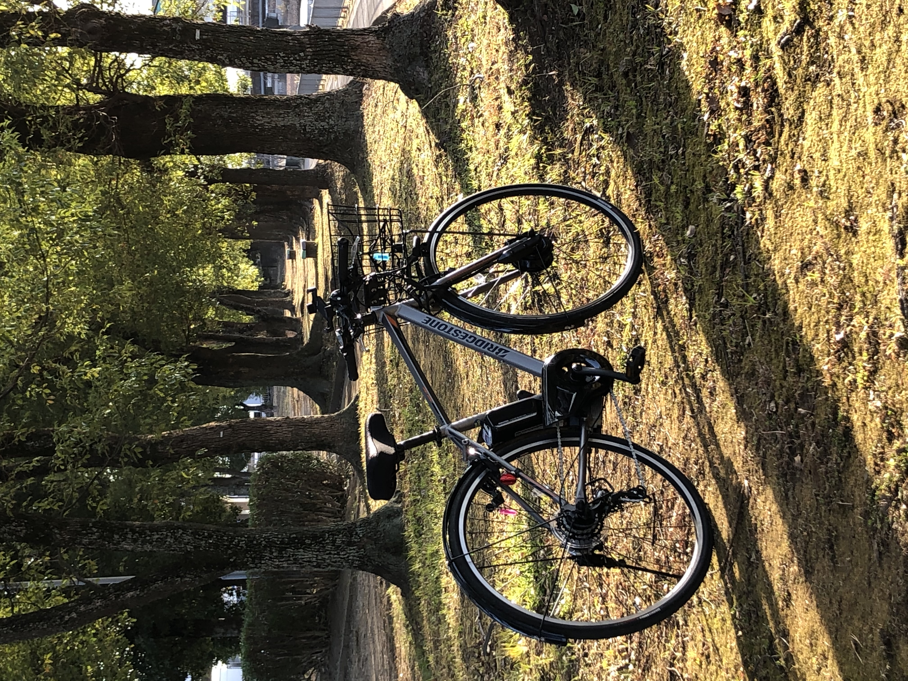

姫路じてんしゃ旅
- サイクルツアー
- E-BIKES
About
私達は、E-Bike専門のサイクリングツアーです。「人生で記憶に残る１日」をテーマに、姫路の隠れスポットを探検します。世界遺産の姫路城が唯一有名な姫路には、まだまだ知られていない観光スポットが星の数ほどあります。 歩くには遠すぎる、車では入って行けない、自転車では坂道がキツすぎる、そんな隠れたルートをコースにし、E-Bikeで楽しみましょう！地域の魅力を発信し、一人でも多くの方に姫路の魅力を伝えて行きたいのです。参加者の皆さんには、街の文化、歴史、人と触れ合い、第二の故郷や第三の故郷の発見により、人生を豊かにしていただきたいです。 E-Bikeサイクリングアクティビティによって姫路の地域をもっと元気にする。それが私達の未来図です。

Tour
歴史の通りみち 西国街道と船場城西の風景をめぐるショートサイクリング
京の都から中国地方へとつながる街道筋に栄えた古い町並み、伝統の姫路仏壇や老舗の味噌屋さんなど昔ながらの文化が息づく町を短時間でご案内。世界遺産姫路城が近いので、姫路城観光の前後の空いた時間に気軽にご参加いただけます。
季節の花々が彩る夢前川 姫革クラフトとフルーツジャムづくり体験

初春の菜の花、春の桜並木、初夏から夏にかけては芝桜や蓮の花など四季折々の花々の競演を楽しみながらのサイクリング。姫革細工の体験や近くの畑で栽培されるフルーツを使ったジャムづくり体験など盛りだくさんの一日です。
楽々ヒルクライム パワースポット広峯神社・増位山随願寺をめぐる

天平の昔から霊験あらたかな古社として廣峯山頂に鎮座する広峯神社、聖徳太子ゆかりの名刹である増位山随願寺、姫路の2大パワースポットへは標高200メートル超の山々の山頂を目指してヒルクライム。E-Bikeだから楽々爽快です。